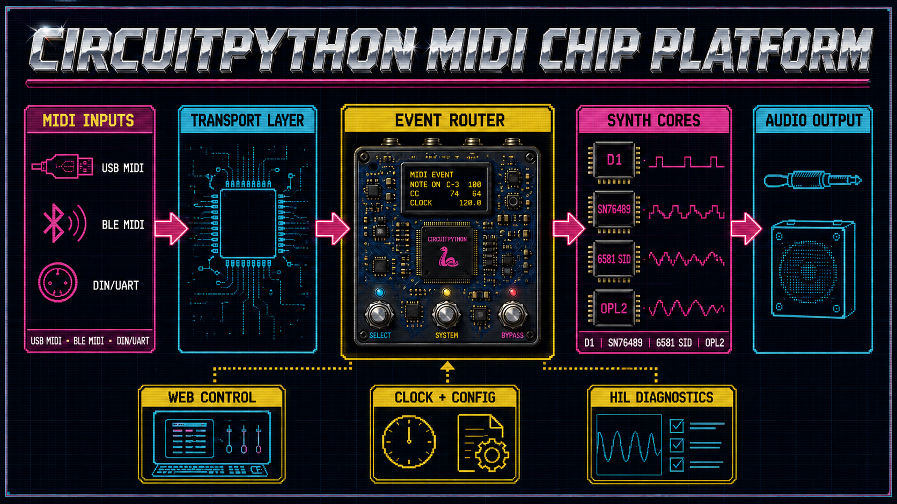

CircuitPython MIDI Chip Platform¶
’n MIDI-beheerde, multi-kern retro-sintetiseerdermodule in pedaalvorm, met USB-MIDI, stereo-klankuitvoer, plaaslike webbeheer en uitbreibare skyfie-emulasie.

Die seinpad bly doelbewus modulêr. Die eerste klein MVP bewys slegs Logic USB-MIDI → D1-basiskern → MAX98357-I2S. Daarna brei dieselfde kontrakte uit na SN76489 → 6581 SID → OPL2 → OPL3, ander transports en ander klankbackends.
Projekstatus¶
Die projek is by Sprint 3, runtime v0.16.0. MCP-US-016 se MAX98357A-klankhek en US-063 se draagbare monofoniese D1-kern is Done. US-075 se startup mute, 0.08 master gain en 0.25 plafon is host-groen en In Review; 'n 4-8 ohm speaker-HIL bly die laaste hek voor US-055 se hoorbare Logic-integrasie.
Begin hier¶
1. Gebruikers: installatiegids¶
Die snelbegin- en installasiegids neem 'n beginner stap vir stap deur Git, Python, 'n virtuele omgewing, installasie, diagnose en toetse op macOS, Windows en Raspberry Pi. VS Code en Thonny is opsionele hulpmiddels; die projek is nie van enige IDE afhanklik nie.
Nadat die installasie voltooi is:
python -m midi_chip_platform diagnose
python -m pytest
2. Ontwikkelaars: Bootloader¶
Lees die architectuur, teams en user stories "Bootloader".
MVP in een sin¶
Bewys op 'n LOLIN/Wemos ESP32-S2 Mini dat Logic Pro USB-MIDI Note On/Off kan stuur en dat 'n draagbare D1-basiskern hoorbaar deur die MAX98357-I2S-uitvoer speel.
Ná die eerste MVP¶
SN76489, SID, OPL, BLE-MIDI, DIN/UART, MIDI-kitaar-slides, stereo, multi-core, DSP en plaaslike webbeheer bly geordende post-MVP stories. Wi-Fi sal nooit in boot.py begin nie.
Hoekom ’n skoon repository?¶
Die bestaande pappavis/midi-chip-platform bevat waardevolle idees, dokumentasie en ’n ou modulêre CircuitPython-basislyn, maar ook verskillende runtime-generasies. Hierdie repository hergebruik die getoetste kontrakte en leerlesse sonder om historiese eksperimente as produksiekode te behandel.
Lees eerste¶
- MVP-omvang
- Framework Engineering: beheerde visie-, argitektuur- en kwaliteitsingang
- Enterprise Vision
- Framework And Solution Architecture
- Enterprise Meta Model
- Quality Manual
- Test Strategy
- Volledige user-story-katalogus
- Toestel- en broninventaris
- Hergebruiksmatriks
- Span en RACI
- Risiko-register
- Burn-In en heap-stabiliteitspesifikasie
- Bronregister
- Excel Kanban-backlog
- Agile delivery- en releaseplan
- Backlog sanity check
- Afdwingbare agent- en kodereels
- Snelbegin, installasie en ontwikkelomgewings
- MCP-US-002 review en toetsbewys
- MCP-US-003 safe-boot review en HIL-bewys
- MCP-US-004 bordvermoëns-review en bedrading
- MCP-US-005 konfigurasie- en geheimegrens-review
- MCP-US-014 AudioOutput-review
- MCP-US-016 standalone I2S-diagnostiek-review
- MCP-US-063 draagbare D1-basiskern-review
- MCP-US-075 veilige audio-uitsethek-review
- Sprint 3 lessons learned: I2S, D1 en veilige uitset
- MCP-US-006 draagbare MIDI-eventmodel-review
- MCP-US-007 USB-MIDI receive-loop-review
- MCP-US-062 BLE-MIDI capability-review
- MCP-US-008 MIDI-kanaalrouter-review
- MCP-US-009 note-off-semantiek-review
- MCP-US-010 pitch bend/CC1-review
- Outonome MIDI-batch hostaanvaarding en toestelverbinding
- Sprint 1 lessons learned - checkpoint 001
- Sprint 2 lessons learned - checkpoint 001
- Sprint 2 lessons learned - dependency-closed deployment
- Sprint 2 lessons learned - USB-MIDI HIL en repository/REPL
- MCP-US-051 HIL-runner review
- MCP-US-051/007 dependency-closed deployment-impediment
- Audio-prioriteit en MIDI-kitaar amendment
- MIDI-transport en multi-core amendment
- BLE-MIDI en synth-core-prioriteit
- Wi-Fi station-, access-point- en mobiele webfallback
- Post-MVP fisiese chip- en I2C-display-uitbreiding
- Device Connection Proof
- Repository-identiteit en sinkronisasiekontrak
Belangrike veiligheidsreëls¶
- Wi-Fi-wagwoorde, API-sleutels en plaaslike toestelidentifiseerders word nooit in Git gestoor nie.
settings.toml,secrets.py, firmwarebeelde en private toestelrugsteune word deur.gitignoreuitgesluit.- ’n Wagwoord wat voorheen in prototipekode verskyn het, moet geroteer word voordat netwerkwerk begin.
- Geen UF2-flash, skyfuitvee of bootloader-aksie gebeur sonder ’n afsonderlike, eksplisiete goedkeuring nie.
Ontwikkelbeginsels¶
- Klasgebaseerde ontwerp sonder globale toepassingsstatus.
- Geen globale veranderlikes,
global-statements, modulevlak helperfunksies of import-newe-effekte nie. - Alle runtime-status behoort aan klasinstansies en word via dependency injection gekoppel.
- Klein stories met rooi/groen-toetse en eksplisiete hardeware-aanvaarding.
- Bordvermoëns word ontdek; bordname, MIDI-toestelle en penne word nie as universele konstantes aanvaar nie.
- MIDI, kernlogika, klankuitvoer en webbeheer word deur duidelike poorte geskei.
device/i2s_test.pysal as US-016 die MAX98357-pad onafhanklik met G-C-D square waves toets; dit voer geen synthpakket in nie en deel geen globale status nie.- Die klankenjin bly vervangbaar: draagbare D1-basiskern eerste, SN76489 tweede, 6581 SID derde en OPL2/OPL3 daarna.
- Ná MVP kan dieselfde kernkontrak 'n emuleerde of fisiese chipbackend kies; emulasie bly altyd verstek en veilige fallback.
- BLE-MIDI is post-MVP en capability-gated: die ESP32-S2 rapporteer dit veilig as nie-ondersteun; 'n BLE-geskikte tweede bord lewer later die fisiese aanvaardingsbewys.
- Wi-Fi-runtime gebruik ’n eksplisiete toestandmasjien: station join, begrensde mislukking, beveiligde AP-fallback en sigbare IP; logging is spaarsaam en koersbegrens.
- Die span volg backlogvolgorde; side quests word georden en nie stilweg geimplementeer nie.
- Lessons learned word na elke drie of vier voltooide stories en by epic-/releasegrense opgedateer.
python-d1-synthis produksiekode en word uitsluitlik as 'n leesalleen-verwysing gebruik.- Ollama is opsioneel vir goedgekeurde klein ontwikkeltake; dit is nooit nodig om die synth te bou of uit te voer nie.
- Startup toon altyd projekweergawe, aktiewe story/amendment en release-datum.
- 'n Post-MVP release-polish story sal elke USB-toestel 'n herkenbare
EasyLab4Kids-midi-chip-platform XXXX-styl naam gee, waarXXXX'n stabiele, nie-geheime instance-ID is.
Lisensie¶
MIT. Sien LICENSE.